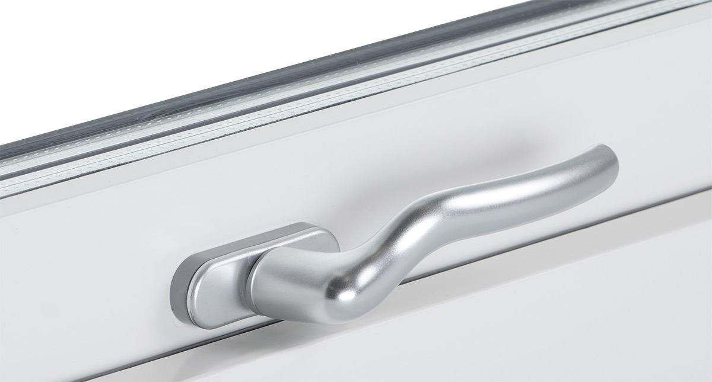

Ett vackert och lättskött fönster
Funktionella lösningar för din komfort
För muspilen över bilden för att se några av fördelarna.
Fakta om Tomoku Hus fönster:
Till Tomoku Hus fönster och fönsterdörrar används trä med bästa kvalitet. Råvaran är noga utvald och tas från tätvuxen furu som växt i Norden.
Alla våra fönster och fönsterdörrar tillverkas utifrån certifieringen ”P-märkt produktion”. Den svenska Certifieringen utfärdas av RISE, som även kontinuerligt kontrollerar tillverkningen genom att göra oannonserade stickprov och tester av produktion.
Fönster och fönsterdörrar från Tomoku Hus är dessutom CE-märkta och har 10-års garanti.
Fönster ur vårt standardsortiment kan vi som regel leverera på mindre än fyra veckor. Se fliken "Standardstorlekar" nedan för mer information.
Öppna fönstret 180o
Titta på bilden bredvid. Den visar hur du kan öppna fönstret i 180 grader utan att det slår ner blomkrukor eller prydnadssaker. Man putsar först insidan och svänger sedan runt fönstret ett varv för att fortsätta med utsidan. Med vår moderna teknik tillverkar vi ett av de bästa fönstren. I Japan har de gjort succé, nu finns dom även på den svenska marknaden.
Inte bara bra design. Bästa kvalitet och kontroll.
För oss på Tomoku Hus är det viktigt att fönster och fönsterdörrar har rätt design och mycket hög kvalitet. Till våra fönster och fönsterdörrar används trä med bästa kvalitet. Råvaran är noga utvald och tas från tätvuxen furu som växt i Norden. Produkterna tillverkas av lamellimmade ämnen från denna råvara. Limningen gör att karm- och bågämnen inte slår eller vrider sig.
Efter bearbetning vakuumimpregneras träämnena för att skyddas mot röta. Detta gör att vår kvalitet kan jämföras med den som fanns i fönster förr i tiden. Vitmålade produkter behandlas med två lager grundfärg och ett lager toppfärg.
Du läser rätt
Eftersom vi vet att vår ytbehandling är mycket effektiv ger vi 10 års garanti mot rötskador, på de produkter som levereras ytbehandlade från vår fabrik. Rätt underhållna fönster och fönsterdörrar från Tomoku Hus håller förstås mycket längre än så.
Gör det till DITT fönster - välj handtag, spröjs, mm.
Välj mellan fasta eller glidhängda fönster
Tomoku Hus har fasta fönster, TMK, eller glidhängda fönster, TMH, som kan öppnas 180 grader. De glidhängda fönstren är praktiska och funktionella och öppnas utan att krukväxter och gardiner kommer i kläm. De kan ställas i ventilations-, vädrings- eller putsläge. Fasta fönster är ett bra alternativ för större ytor eller där man kanske inte behöver lika mycket komfort.
Välj glas sort efter behov
I standardutförande är våra fönster och fönsterdörrar försedda med treglas isolerrutor och klara 4 mm floatglas. Glas väljs utifrån krav på energieffektivitet och utseende som exempel insynsskyddade glas för badrum.
Kvalitetsmärkning och slutkontroll
Alla våra fönster och fönsterdörrar tillverkas utifrån certifieringen P-märkt produktion. Detta innebär att vi tillverkar våra fönster och fönsterdörrar utifrån specifika krav på funktion, montage, ingående material och komponenter. Tester på täthet görs hos RISE i Borås 2 gånger per år. Våra fönster klarar kontrollen för högsta regntäthetsklass, 600 Pa-klass 9a. Alla produkter genomgår en slutkontroll innan de levereras till kund. Och givetvis är de CE-märkta.